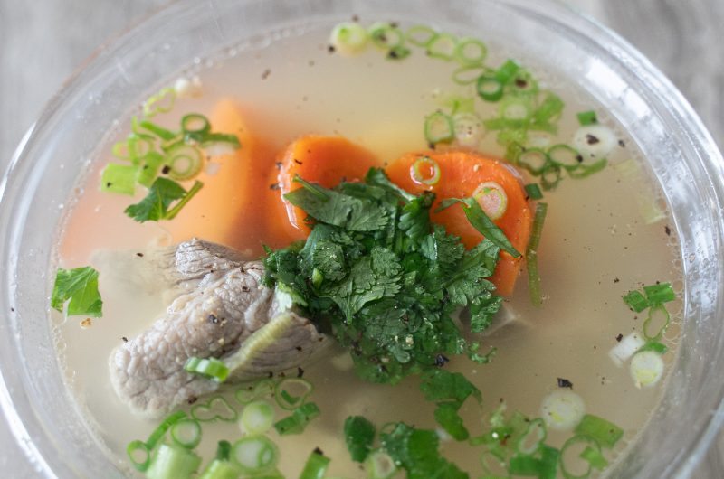

Canh Sườn Heo

Ingredients
- 3 quart water
- 1 lb pork sparerib
- 2 Yukon potatoes
- 2 large carrots
- 1 small shallot
- 1 inch knob ginger
- 2 tbsp fish sauce
- 1 tbsp MSG
- 1/2 tbsp fish sauce
- Salt and pepper
Garnishes
- Cilantro
- Green onion
- Black pepper
Directions
- Parboil pork spareribs for 5-10 minutes to get rid of porky odor and scum. Rinse and clean under cold water
- In a small stockpot, add water, cleaned pork, shallots, and ginger. Bring up to a boil, skim off any impurities, and let simmer for one hour
- Remove aromatics, and add in cut potatoes and carrots; simmer for another thirty minutes or until fork tender
- Season broth with fish sauce, msg, sugar, salt and pepper to taste
- Garnish with cilantro and green onions